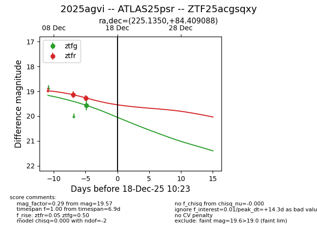
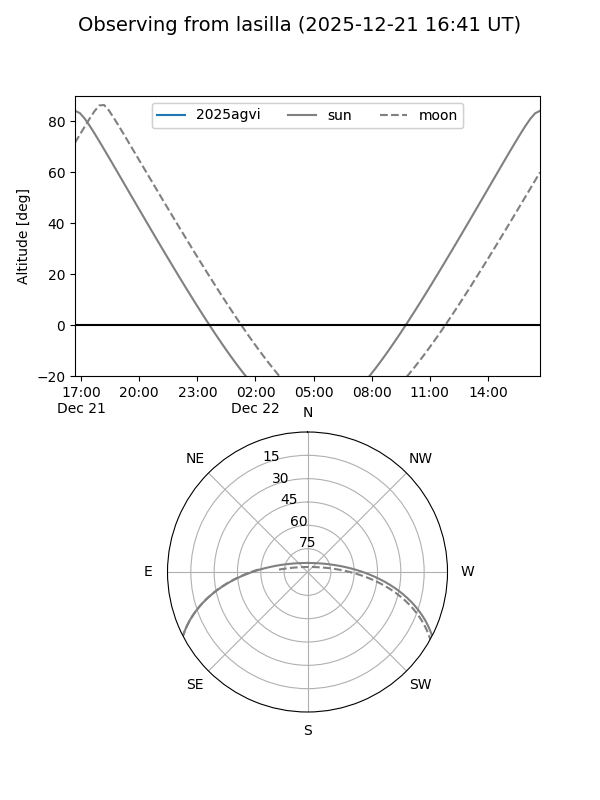
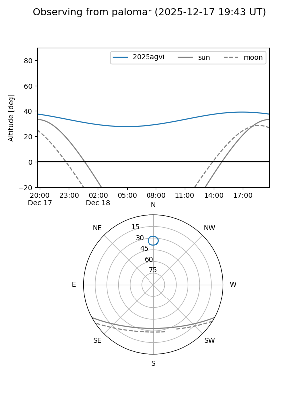

2025agvi
Target 2025agvi at 2025-12-18 11:18
Aliases and brokers:
FINK: fink-portal.org/ZTF25acgsqxy
Lasair: lasair-ztf.lsst.ac.uk/objects/ZTF25acgsqxy
ALeRCE: alerce.online/object/ZTF25acgsqxy
TNS: wis-tns.org/object/2025agvi
YSE: ziggy.ucolick.org/yse/transient_detail/2025agvi
alt names
ZTF25acgsqxy (ztf,fink_ztf)
2025agvi (tns,yse)
ATLAS25psr (atlas)
Coordinates:
equatorial (ra, dec) = 225.1350,+84.40909
equatorial (HMS+DMS) = 15:00:32.39,+84:24:32.72
galactic (l, b) = (119.4221,+31.81139)
Photometry
last ztfg=19.57, ztfr=19.27
1 ztfg, 2 ztfr detections
Lightcurve

Visibility


Additional plots